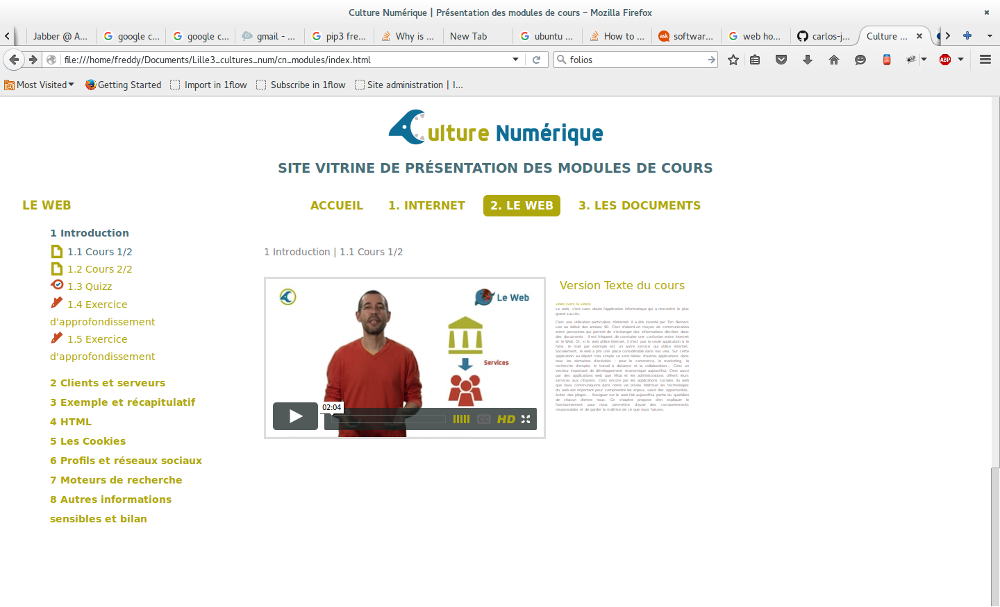

http://vimeo.com/video_id qui permet au plugin Viméo de Moodle de transformer le lien vidéo en iframe automatiquement:

Nous détaillons ici la chaine éditoriale adoptée pour la production des modules mis à dispositions sur ce dépôt.
Nous utilisons un fichier dit "maitre" comme matrice de base pour générer le cours. La syntaxe employée est basée sur le format MarkDown. Vous pourrez observer l'usage de ce format dans la video de cette section de cours.
Pour permettre de prendre en compte les spécificités d'un contenu de cours destiné à être publié en ligne ou au sein de plateforme de Mooc ou de eLearning, nous avons étendu la syntaxe Markdown. Ces ajouts consistent en des conventions décrites ci-dessous et reprennent également les extensions proposées par la librairie Python de MarkDown.
Un cours se décompose en sections et sous-sections. Le niveau sous-sections constitue le niveau "pivot" de la structure d'un cours Culture NUmérique. Chaque sous-section peut être du type et de la forme suivante:
Rédigée en MarkDown, c'est un type de sous-section simple consistant en du texte mis en forme et enrichi d'images. Par rapport au MArkdown simple, nous utilisons les fonctions supplémentaires décrites ci-après.
Avec des Attribute list: Pour permettre d'ajouter des classes CSS à une image ou à un bloc de texte, pour permettre une mise en page enrichie.
Un exemple pour ajouter un attribut en ligne à un lien:
[link](http://example.com){: class="foo bar" .titre title="Some title!" }
qui produit le HTML suivant:
<p><a href="http://example.com" class="foo bar titre" title="Some title!">link</a></p>
Notez que pour ajouter des classes on peut soit spécifier .une_classe ou `class='une_classe``
En utilisant simplement les commentaires HTML:
<!-- On pourrait aussi mentionner les lol cats dans cette section non ? -->
Le commentaire suivant ne sera donc pas visible dans le rendu HTML final.
Ces éléments de cours consistent en des sous-sections pouvant inclure 1 ou plusieurs vidéos d'animations. Ici il y a 2 étapes:
- a) avant la réalisation des vidéos, on ajoute des blocs 'Idée animation' pour décrire ce que pourrait contenir l'animation qui sera intégrée par la suite
- b) une fois la vidéo réalisée, on intègre le lien de la vidéo qui sera ensuite intégrée via une iframe dans la sous-section de cours
On utilise ici le principe natif de block quote Markdown avec un > en début de paragraphe:
> [Animation] Peut être des lettres simples en suite de 0 et de 1, et des
compositions en mots/composition de suites de 0 et 1... est-ce
qu'on fait passer l'idée de coder/décoder et sa contraction en codec?
Qui produira ce résultat:
[Animation] Peut être des lettres simples en suite de 0 et de 1, et des compositions en mots/composition de suites de 0 et 1... est-ce qu'on fait passer l'idée de coder/décoder et sa contraction en codec?
NB Si le mot clé [Animation] n'est pas inclu, le bloc sera toujours interprété comme bloc idée d'animation.
Sur le même principe que les attribute lists (cf ci-dessus), on spécifie qu'il s'agit d'un lien vers une vidéo en spécifiant la classe lien_video:
[Introduction au web](https://player.vimeo.com/video/138623497){: .lien_video }
ou
[Introduction au web](https://player.vimeo.com/video/138623497){: class="lien_video" }
Ce lien doit être placé à l'intérieur d'une sous-section. Une sous-section peut bien sûr comporter plusieurs vidéos.
Ces liens vidéos font l'objet d'un traitement spécifique selon le type d'export:
export Site Vitrine HTML: on génère un code d'iframe qui permet de lire le/les vidéo/s sans quitter la page courante; le texte de la sous-section est quant à lui offert en parallèle en mode "zen" activé au click sur la vignette à côté des vidéos (cf image ci-dessous).

pour l'export Moodle/IMSCC, le lien est simplement reformaté pour respecter le format http://vimeo.com/video_id qui permet au plugin Viméo de Moodle de transformer le lien vidéo en iframe automatiquement: